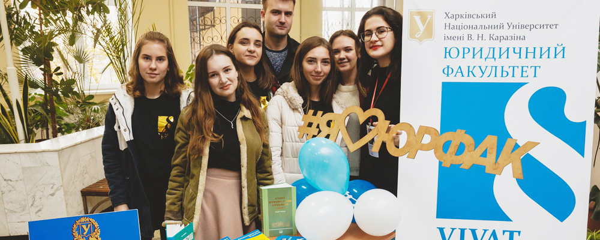
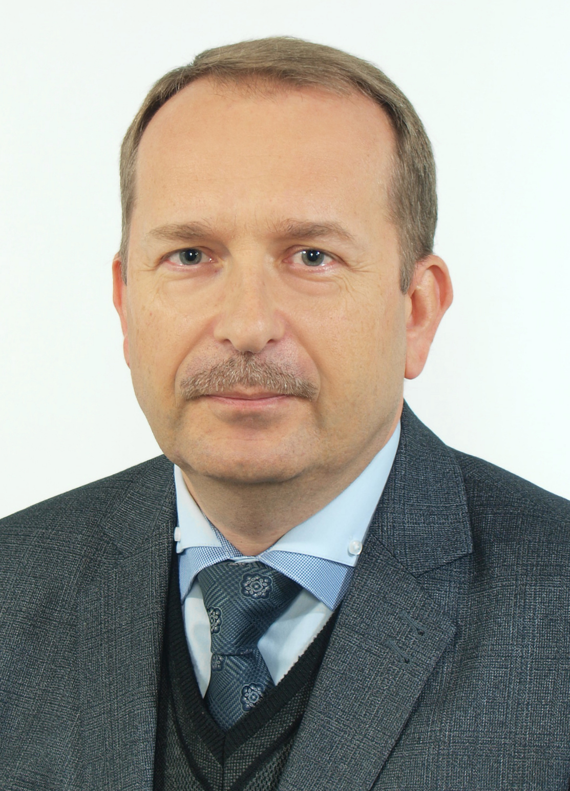

Юридичний

Сайт факультету
Навчальна робота
Історія юридичного факультету Харківського університету розпочинається у 1804 році — від відділення морально-політичних наук, яке згодом перетворилося на факультет. У 1920 році юридичний факультет було ліквідовано й на його основі створено правовий факультет Харківського інституту народного господарства, який у подальшому став Національним юридичним університетом імені Ярослава Мудрого. Юридичний факультет було відновлено у 2004 році Наказом ректора № 0202-1/088 від 1 червня 2004 року. Відродження факультету у стінах одного з найстаріших університетів Східної Європи було зумовлене необхідністю відбудови структури класичного університету, а також сприяло поповненню державних, громадських, правоохоронних органів та установ кваліфікованими фахівцями-юристами. Підготовка фахівців на юридичному факультеті проводиться за освітніми програмами «Право» та «Міжнародне право». Під час навчання здобувачі вищої освіти послідовно вивчають базові юридичні дисципліни, а також дисципліни гуманітарної та соціально-економічної підготовки. Для здобувачів вищої освіти освітніх ступенів «Бакалавр» та «Магістр» передбачено вибір спеціалізації за одним із трьох профілів підготовки: державно-правовий, цивільно-правовий, кримінально-правовий.
Структура факультету
Підготовку студентів здійснюють понад 70 висококваліфікованих фахівців, зокрема 21 доктор наук, із них 15 мають вчене звання професора, 45 кандидатів наук, із них 36 мають вчене звання доцента, 4 заслужені юристи України.
Наразі до складу факультету входить 5 кафедр: кафедра державно-правових дисциплін, кафедра цивільно-правових дисциплін, кафедра кримінально-правових дисциплін, кафедра конституційного і муніципального права, кафедра міжнародного і європейського права.
Студенти факультету денної та заочної форм навчання отримують освітній ступінь бакалавра (4 роки навчання) та магістра (1,5 роки навчання).
Декан

Серьогін Віталій Олександрович
доктор юридичних наук, професор
Телефон: +380 (63) 589-29-81
Електронна пошта: law@karazin.ua
Адреса: 61022, м. Харків, майдан Свободи 6, північний корпус, кімната 427